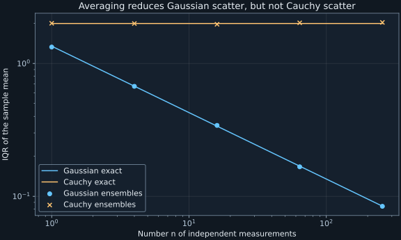

Chapter 4 · Lecture 5
Stable laws, heavy tails, and infinite divisibility
Repeating a noisy measurement is useful only if the chosen estimator concentrates. Gaussian sample means narrow as the inverse square root of the number of measurements. Cauchy sample means retain exactly the original distribution at every sample size. Both conclusions follow from independent measurements. The difference lies in the law being averaged, so independence alone cannot justify an error bar shrinking as $n^{-1/2}$.
Lecture 5 supplies stable-law definitions, Gaussian/Cauchy/Lévy examples, transformations, and infinite divisibility. Its full caption text and two timed stills were inspected, with partial visual coverage. The mathematical parameter conventions below repair several informal source statements: a Cauchy location is not its expectation, a Gaussian-ratio scale follows the numerator variance, and the Lévy transform must match its density's scale. Numerical examples and exercises are independent teaching constructions.
4.1 Stability means closure after a specified rescaling L5 1:53
A probability law is stable if for iid copies $X_1,\ldots,X_n$ and every integer $n\geq2$, there are constants $a_n\gt0$ and $b_n\in\mathbb R$ such that $(\sum_jX_j-b_n)/a_n$ has the same law as $X_1$. Equality here is equality of distributions, not equality of random realizations. If all $b_n$ can be zero, the law is strictly stable. The definition asks for exact closure at every $n$, stronger than attraction to a limiting law as $n$ grows.
The chapter's principal working family is the centered symmetric stable law with characteristic function $\phi_X(k)=\exp(-c|k|^\alpha)$, where $c\gt0$ and $0\lt\alpha\leq2$. The exponent $\alpha$ is the stability index. Its units are fixed by requiring $c|k|^\alpha$ dimensionless: if $X$ has length units, $c$ has units length to the power $\alpha$. Existence of this family for the stated index range is part of the stable-law classification given in the instructor notes, PDF pages 40–42; it is a cited result here. The scaling property itself is proved directly.
Independence gives $\phi_{\sum X_j}(k)=\exp(-nc|k|^\alpha)$. Scaling one copy gives $\phi_{n^{1/\alpha}X}(k)=\exp[-c|n^{1/\alpha}k|^\alpha]$, the same function. Characteristic functions identify probability laws. Dividing both random variables by $n$ proves the sample-average identity. ∎
At $\alpha=2$, the law is Gaussian with variance $2c$ and the sample mean narrows as $n^{-1/2}$. At $\alpha=1$, the width is unchanged. When $\alpha\lt1$, its quantile width grows with sample size under ordinary averaging. This last statement concerns sample averages as defined random variables, not an expectation that might fail to exist.
The upper index limit can be checked without guessing a Fourier inverse. If $\exp(-c|k|^\alpha)$ were a characteristic function for $\alpha\gt2$, then $[1-\Re\phi_X(k)]/k^2\to0$. For every fixed real $x$, $(1-\cos kx)/k^2\to x^2/2$, and the integrand is nonnegative. Fatou's lemma would imply $\mathbb E[X^2]/2\leq0$. Thus $X=0$ almost surely, contradicting a transform smaller than one away from zero. For $\alpha\lt0$, continuity at zero fails; $\alpha=0$ also fails to approach one for $c\gt0$. These obstructions explain why this proposed transform cannot be extended beyond the stated range.
4.2 A Cauchy average does not become more precise L5 22:41
A Cauchy distribution with location $\mu$ and scale $s_C\gt0$ has density $\rho(x)=s_C/[\pi((x-\mu)^2+s_C^2)]$. The location is its symmetry center, median, and mode; it is not its mean. Integrating after the substitution $y=(x-\mu)/s_C$ gives cumulative distribution $F(x)=1/2+\pi^{-1}\arctan[(x-\mu)/s_C]$. Its central half of probability lies between $\mu-s_C$ and $\mu+s_C$, so its interquartile range is $2s_C$.
Fourier inversion of $e^{-s_C|k|}$ provides a short transform check: split the integral at zero and combine the two exponentials into a cosine. The elementary integral $\int_0^\infty e^{-s_Ck}\cos(kx)\,dk=s_C/(s_C^2+x^2)$ gives the centered density. Translation therefore yields $\phi_X(k)=\exp(ik\mu-s_C|k|)$ under the positive-sign convention.
The characteristic function of $\overline X_n=n^{-1}\sum_jX_j$ is $[\phi_X(k/n)]^n=\exp(ik\mu-s_C|k|)$. Its interquartile range therefore remains $2s_C$ for all $n$. By comparison a Gaussian average of input variance $\sigma^2$ has variance $\sigma^2/n$. ∎
The Cauchy tail has density proportional to $|x|^{-2}$. Consequently $\mathbb E[|X|]$ diverges logarithmically, and the positive and negative parts of the signed first moment do not define a finite expectation. A symmetrically truncated principal-value integral can equal $\mu$, but that cancellation is a different operation. The second moment also diverges. Printing a finite sample variance does not repair either nonexistent population moment.
For the standard centered Cauchy, the probability $\Pr(|\overline X_n|\gt10)$ is the same at one, one hundred, or any other positive sample size: $1-(2/\pi)\arctan10$. This gives an operational failure of averaging. It does not say that every estimator fails: the sample median uses quantiles, rather than a sum vulnerable to arbitrarily large observations. Its analysis is a different statistical problem.
4.3 A reciprocal square creates a one-sided heavy tail L5 28:23
Let $Z$ be standard Gaussian, and set $L=c/Z^2$ for a positive scale $c$. The value $Z=0$ has zero probability, so $L$ is finite almost surely despite its unbounded support. For $x\gt0$, the two inverse Gaussian values are $\pm\sqrt{c/x}$, each with absolute derivative $\sqrt c/(2x^{3/2})$. The branch formula from chapter 2 gives the one-sided Lévy law:
$$\rho_L(x)=\sqrt{\frac{c}{2\pi}}x^{-3/2}\exp\left(-\frac{c}{2x}\right),\qquad F_L(x)=\operatorname{erfc}\sqrt{\frac c{2x}}.\tag{4.2}$$The cumulative formula follows by writing $L\leq x$ as $|Z|\geq\sqrt{c/x}$. It tends to zero at $x\downarrow0$ and to one at infinity, confirming normalization. The density decays faster than any inverse power near zero and as $x^{-3/2}$ at large $x$. The latter makes even its first moment infinite. The mode, obtained by differentiating the logarithm, is $c/3$; it is neither a mean nor a typical upper-tail cutoff.
The Laplace transform, with real $s\geq0$ of inverse-$x$ units, is $\mathbb E[e^{-sL}]=\exp[-\sqrt{2cs}]$. A useful integral verification uses $I(a,b)=\int_0^\infty\exp(-az^2-b/z^2)\,dz$ for $a,b\gt0$. Differentiating with respect to $b$ and changing variables $z=\sqrt{b/a}/u$ gives $\partial_bI=-\sqrt{a/b}\,I$. Its value at $b=0$ is $\sqrt\pi/(2\sqrt a)$, so $I=\sqrt\pi\exp(-2\sqrt{ab})/(2\sqrt a)$. Substituting $a=1/2,b=sc$ proves the transform.
With the same density scale $c$, the positive-sign characteristic function is $\phi_L(k)=\exp[-\sqrt{c|k|}(1-i\operatorname{sgn}k)]$. This is the boundary value of the Laplace expression on the principal square-root branch; bounded convergence from positive real damping gives that boundary. The factor multiplying $\sqrt{|k|}$ is $\sqrt c$, rather than $c$. This scale consistency matters when a density and transform are used in the same calculation.
Multiplying $n$ Laplace transforms gives $\exp[-n\sqrt{2cs}]=\exp[-\sqrt{2(n^2c)s}]$. Thus the sum of $n$ independent copies has the same law as $n^2L$: it is strictly stable of index $1/2$, although it is not in the centered symmetric subclass of Section 4.1. Brownian first-passage times later supply a physical realization. No general reciprocal-power rule for arbitrary stable variables is inferred from this particular Gaussian transformation.
4.4 A ratio can destroy moments that both inputs possess L5 40:16
Let $X_1,X_2$ be independent centered Gaussian coordinates with standard deviations $\sigma_1,\sigma_2\gt0$. Define $R=X_1/X_2$, meaningful almost surely because $\Pr(X_2=0)=0$. Use coordinates $(r,y)$ with $x_1=ry,x_2=y$; the absolute Jacobian is $|y|$. Integrating the joint density gives
$$\rho_R(r)=\frac{1}{2\pi\sigma_1\sigma_2}\int_{-\infty}^{\infty}|y|\exp\left[-\frac{y^2}2\left(\frac{r^2}{\sigma_1^2}+\frac1{\sigma_2^2}\right)\right]dy=\frac{s_C}{\pi(r^2+s_C^2)},\quad s_C=\frac{\sigma_1}{\sigma_2}.\tag{4.3}$$The integral uses $\int_0^\infty y e^{-Ay^2/2}dy=1/A$. Near-zero denominators generate a heavy-tailed ratio even though both numerator and denominator have all Gaussian moments. If $X_j$ are independent diffusing coordinates at a common time $t\gt0$, then $\sigma_j^2=2D_jt$ and $s_C=\sqrt{D_1/D_2}$. Time cancels. Increasing numerator diffusion must broaden the ratio, an immediate check on which diffusion coefficient belongs on top.
4.5 Infinite divisibility asks for smaller component laws L5 49:56
A law is infinitely divisible if for every positive integer $n$ it can be represented as the law of a sum $Y_{n,1}+\cdots+Y_{n,n}$ of iid variables. The component law may change with $n$ and need not equal the final law. This is a property of distributions; it does not assert that one observed outcome has a unique microscopic decomposition.
Equivalently, for each $n$ a characteristic function $\psi_n$ must exist such that $\phi_X(k)=[\psi_n(k)]^n$. Taking an algebraic nth root of a complex function is insufficient: that root must be the transform of a nonnegative probability measure, with the positivity properties from chapter 2. In the symmetric stable family, $\psi_n(k)=\exp[-(c/n)|k|^\alpha]$ is valid because it is a scaled member of the same established family. The component is distributed as $n^{-1/\alpha}X$, rather than as an unscaled copy of $X$.
Choose iid components Poisson of mean $\lambda/n$. Their characteristic functions multiply to $[\exp((\lambda/n)(e^{ik}-1))]^n=\exp(\lambda(e^{ik}-1))$, the requested law. All roots here are actual Poisson laws, so the construction establishes more than formal algebra. ∎
A nondegenerate Poisson law is not stable in the real-variable rescaling sense. It has finite positive variance, so stability would require $a_n=\sqrt n$ by comparing variances. For $n=2$, its rescaled lattice spacing becomes $1/\sqrt2$, incompatible with the original positive masses at every nonnegative integer after any translation. Thus infinite divisibility is strictly broader than stability.
The same Poisson construction proves that a Skellam law is infinitely divisible: divide each independent Poisson intensity by $n$, form $n$ independent differences, then add them. A geometric law is also infinitely divisible. To see an actual root distribution, its generating function $p/(1-qz)$ has nth root $p^{1/n}(1-qz)^{-1/n}$, with $q=1-p$ and $0\lt p\leq1$. The binomial series has nonnegative coefficients $(1/n)(1/n+1)\cdots(1/n+j-1)q^j/j!$, and evaluating at $z=1$ normalizes them. These roots are negative-binomial laws of positive shape $1/n$. Integer mode count was one construction of that family, not a restriction on all its valid parameters.
4.6 A bounded nondegenerate law cannot be infinitely divisible
The binomial count is a sum of a fixed number $N$ of Bernoulli variables, so it is $N$-divisible. That does not imply divisibility into every number of iid real summands. A support argument supplemented by a variance bound gives a proof that does not assume the components are integer valued.
Suppose $X$ has bounded essential support endpoints $a\lt b$, and $X=\sum_{j=1}^nY_j$ in distribution with iid independent components. Each component must be bounded: if one can exceed arbitrarily large values while the others each lie above some fixed finite lower threshold with positive probability, independence makes the sum exceed $b$ with positive probability. The lower-tail argument is the same. Let component essential endpoints be $c,d$. Independence and positive probabilities arbitrarily close to the endpoints imply $nc=a$ and $nd=b$.
Any variable in $[c,d]$ has variance at most $(d-c)^2/4$: its squared distance from the midpoint is at most that value, and variance is no larger than its mean squared distance from any fixed center. Therefore
$$\operatorname{Var}(X)=n\operatorname{Var}(Y_1)\leq\frac{(b-a)^2}{4n}.\tag{4.4}$$If such a decomposition exists for every $n$, the right side tends to zero. The only possibility is a point mass, contradicting nondegeneracy. A fixed-trial binomial with $0\lt p\lt1$ has bounded support and positive variance, hence is not infinitely divisible. Deterministic laws are the exception: a constant is the sum of $n$ constants equal to its nth part.
4.7 Laboratory: measure quantile width instead of a nonexistent variance
The program constructs 20,000 independent sample averages at each listed sample size for standard Gaussian and Cauchy inputs, using seed 202611084. It reports the interquartile range, abbreviated IQR, rather than assigning a population variance to the Cauchy law. Its exact comparisons are $2\Phi^{-1}(0.75)/\sqrt n$ for Gaussian inputs and two for Cauchy inputs, where $\Phi$ is the standard Gaussian cumulative distribution. Run python code/ch04_stable.py; outputs are JSON and text, written beside the script without network access.
n=1: Gaussian=1.329102 (exact 1.348980), Cauchy=2.006741 n=4: Gaussian=0.672885 (exact 0.674490), Cauchy=1.997527 n=16: Gaussian=0.341904 (exact 0.337245), Cauchy=1.971913 n=64: Gaussian=0.166752 (exact 0.168622), Cauchy=2.023120 n=256: Gaussian=0.084087 (exact 0.084311), Cauchy=2.036893

The full program also checks that a ratio with numerator standard deviation two and denominator standard deviation one has Cauchy scale two. Its cumulative-distribution discrepancy is 0.002944 in 200,000 draws. A separate reciprocal-square ensemble has discrepancy 0.002134 from the unit-scale Lévy law. These are implementation diagnostics. The independent Laplace quadratures at three positive arguments test the parameter matching in (4.2) without relying on an empirical moment that diverges.
This minimal calculation implements the exact quantile comparison and has no file effects:
import numpy as np
from scipy.stats import norm
for n in (1, 16, 256):
gaussian_iqr = 2*norm.ppf(0.75)/np.sqrt(n)
print(f"n={n}: Gaussian={gaussian_iqr:.6f}, Cauchy=2.000000")n=1: Gaussian=1.348980, Cauchy=2.000000 n=16: Gaussian=0.337245, Cauchy=2.000000 n=256: Gaussian=0.084311, Cauchy=2.000000
4.8 Stable examples do not classify every heavy tail
The exact stable calculations require specified laws and independent copies. Having an infinite variance alone does not identify an index or prove attraction to a stable law. Nor does knowing that moments exist below a certain order suffice to specify a domain of attraction. Tail regularity, balance, and centering conditions matter. The chapter uses exact Gaussian, Cauchy, and Lévy constructions to establish the mechanisms without silently asserting such a general classification theorem.
The symmetric subclass, the one-sided Lévy law, and a general skew stable law have different phase and support structures. A Cauchy density is symmetric about its location; a skew index-one stable law should not be called that same location-scale Cauchy model. Infinite divisibility concerns distributional decompositions; a stochastic process with stationary independent increments needs consistent laws across time, addressed in later chapters. The repeated-measurement decision here is concrete: select a statistic whose defining population quantities exist, then check its actual scaling.
4.9 Exercises with worked solutions
Exercise 4.1 — Principal value is not expectation (conceptual)
For a centered unit Cauchy variable, integrate $x\rho(x)$ symmetrically between $-A$ and $A$. Then compute the positive contribution between zero and $A$. Explain the apparent disagreement.
Worked solution
The symmetric integral is zero for every $A$ because the integrand is odd. The positive contribution is $\pi^{-1}\int_0^A x/(1+x^2)dx=(2\pi)^{-1}\log(1+A^2)$, which diverges. The negative part has the same divergent magnitude. The signed expectation is not defined by subtracting those two infinities; choosing symmetric truncation defines a principal value instead. Thus the finite symmetric value cannot serve as the mean in a law of large numbers.
Exercise 4.2 — Same family versus same law (conceptual)
A Poisson variable of mean nine is split into three iid Poisson components. Find their means. Why does belonging to the same family not prove stability?
Worked solution
Each component has mean three; their sum has mean nine by independence and the Poisson generating function. Their distributions differ from the final mean-nine law. Infinite divisibility permits that change. Stability would instead require that a shifted and rescaled sum of copies of the mean-nine law recover the same mean-nine law. Finite variance fixes the rescaling to a square root, which conflicts with its lattice support as shown in Section 4.5. Family closure under parameter addition is weaker than real-variable stability.
Exercise 4.3 — Weighted Cauchy noise (derive)
For independent centered Cauchy variables of scales $s_1,s_2$, derive the law of $aX_1+bX_2$ for arbitrary real $a,b$. Compare its scale with a Gaussian variance formula.
Worked solution
Its transform is $\exp[-s_1|ak|-s_2|bk|]=\exp[-(|a|s_1+|b|s_2)|k|]$. Thus the scale is $|a|s_1+|b|s_2$, with a deterministic zero result if both coefficients vanish. Negative weights do not subtract independent Cauchy scatter. For Gaussians, variances add as $a^2\sigma_1^2+b^2\sigma_2^2$; for Cauchy variables there are no variances to add. Averaging $n$ identical scales with weights $1/n$ keeps their scale unchanged.
Exercise 4.4 — Finite moment range for a power tail (derive)
Suppose a nonnegative density is bounded near zero and satisfies $\rho(x)\sim Cx^{-1-\alpha}$ as $x\to\infty$, with $C,\alpha\gt0$. Determine which positive moments exist. If only this moment-existence cutoff were known, without the precise density asymptotic, would it prove stable-law attraction?
Worked solution
The near-zero integral of $x^q\rho(x)$ is finite for $q\gt0$ by boundedness. For sufficiently large $x$, the asymptotic ratio bounds the density between positive constant multiples of $x^{-1-\alpha}$. The tail moment therefore converges exactly when $\int_M^\infty x^{q-1-\alpha}dx$ converges, namely $q\lt\alpha$. At equality it diverges logarithmically; above it diverges as a power.
This argument establishes the moment range. Knowing only that range does not prove a stable-domain-of-attraction statement; such a result needs tail information and a specified centering and normalization. The precise power-density asymptotic assumed in this exercise supplies more information than the moment cutoff alone. The conclusion here concerns what that cutoff establishes, rather than claiming that attraction fails under the stronger density assumption.
Exercise 4.5 — Check the numerator scale (compute/design)
Two independent diffusing particles have diffusion coefficients four and one in common units. Predict the scale and IQR of $X_1(t)/X_2(t)$, and design a check that detects an inverted scale.
Worked solution
The standard-deviation ratio is $\sqrt{4/1}=2$, so the Cauchy scale is two and IQR four at every $t\gt0$. A wrong inverted scale would give IQR one, differing by a factor of four. The laboratory uses precisely this standard-deviation ratio and compares its cumulative distribution with Cauchy scale two; its discrepancy is 0.002944. Estimate quantiles rather than a variance, repeat at several times with each coordinate scaled by $\sqrt t$, and verify that the ratio distribution is time independent. Shared noise or a nonzero mean changes the joint construction and needs a new ratio analysis.
Exercise 4.6 — Test a proposed binomial decomposition (compute/design)
Let $X$ be binomial with $N=20$ and $p=0.2$. Use the support-width bound to find an integer component count that is impossible for an iid real decomposition. Reconcile this with its twenty-Bernoulli construction.
Worked solution
The essential width is twenty and variance is $20(0.2)(0.8)=3.2$. Bound (4.4) would require $3.2\leq400/(4n)=100/n$. Thus every integer $n\geq32$ is impossible; for example, at 32 the upper bound is 3.125. This sufficient obstruction does not classify every smaller $n$. The known twenty-component Bernoulli construction satisfies the bound and proves twenty-divisibility. There is no contradiction: a decomposition at one component count does not imply all others. A numerical characteristic-function root must additionally be tested as an actual probability law, not accepted from its algebraic appearance.
4.10 Sources and attribution
- V. Balakrishnan, Stable distributions and infinite divisibility, lecture 5, IIT Madras, NPTEL115106089, and official instructor notes, PDF40–46. Stable-family existence is cited; scaling, transform checks, reciprocal square, ratio, and bounded-support obstruction are developed here.
- NIST DLMF7.2.1–2 provides error and complementary-error function conventions used in the Lévy cumulative distribution; these were verified in chapter2.
Corrections to the source's informal discussion: Cauchy location does not define a finite mean; the ratio scale is $\sqrt{D_1/D_2}$ for $X_1/X_2$; density scale $c$ gives Lévy transform coefficient $\sqrt c$. No unrestricted reciprocal stable duality or moment-order-only generalized limit theorem is assumed. Raw source material is retained privately.